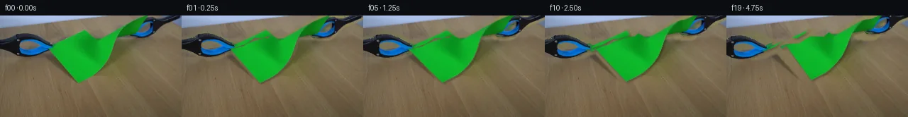

![首帧]()

Round 00
2026-11-05T22:49:10.961976+00:00像素候选变化代码 +327/−0inspection 更新
pixels 7e8f6c1e8921199d · code c96eeb0328ea5234
查看本轮 generate.py 真实 diff
--- previous/generate.py
+++ current/generate.py
@@ -0,0 +1,327 @@
+"""PixelWorld-Text case 0043.
+
+Two blue-black grabber tools pull a folded green paper from opposite corners;
+the paper tensions, tears along the grip diagonal and separates into two halves.
+
+Method (local pixel math only):
+ * numeric RGB segmentation of first_frame.png
+ * static wood table inpainted under moving objects (fitted quadratic light
+ field + smooth coupled grain); untouched pixels keep their exact values
+ * the real green paper pixels are split into two pieces on the bite-to-bite
+ line, with tool-occluded paper reconstructed by nearest-shade fill
+ * each piece is affine-warped from 3 moving anchors (bilinear sampling),
+ clipped to a jagged torn edge; tools are the original sprite pixels
+ translated so the jaws stay on their corner.
+Frame 00 is the untouched source PNG.
+"""
+from pathlib import Path
+import numpy as np
+from PIL import Image, ImageDraw
+from scipy import ndimage
+import artifact_io
+
+CASE = Path(__file__).parent
+rng = np.random.default_rng(20261106)
+H, W = 144, 256
+
+# ---------------------------------------------------------------- load source
+frame0 = np.array(Image.open(CASE / "first_frame.png").convert("RGB"))
+R0, G0, B0 = (frame0[..., i].astype(float) for i in range(3))
+yy, xx = np.mgrid[0:H, 0:W]
+
+# ---------------------------------------------------------------- segmentation
+green_margin = G0 - np.maximum(R0, B0)
+paper_alpha = np.clip((green_margin - 16) / 46, 0, 1)
+paper_alpha[(xx < 60) | (xx > 216) | (yy > 104)] = 0.0
+support = paper_alpha > 0.55
+
+lum = (R0 + G0 + B0) / 3.0
+
+# fitted wood light field (quadratic), refit numerically from clean wood pixels
+clean_wood = ((R0 > 88) & (R0 < 150) & (np.abs(R0 - G0) < 36) &
+ (R0 > B0 + 14) & (yy > 92))
+wy, wx = np.where(clean_wood)
+XP = np.c_[np.ones(len(wy)), wx / 256, wy / 144, (wx / 256) ** 2,
+ (wy / 144) ** 2, (wx / 256) * (wy / 144)]
+coef, *_ = np.linalg.lstsq(XP, frame0[clean_wood].astype(float), rcond=None)
+XG = np.c_[np.ones(H * W), (xx / 256).ravel(), (yy / 144).ravel(),
+ (xx / 256).ravel() ** 2, (yy / 144).ravel() ** 2,
+ (xx / 256).ravel() * (yy / 144).ravel()]
+wood_field = (XG @ coef).reshape(H, W, 3)
+wood_lum = wood_field.mean(2)
+
+# ------------------------------------------------------------- tool sprites
+def sprite_alpha(x0, x1, y0, y1):
+ """Alpha for blue/black grabber pixels inside a bbox (0..1)."""
+ sub = (slice(y0, y1), slice(x0, x1))
+ R, G, B = R0[sub], G0[sub], B0[sub]
+ mx = np.maximum(np.maximum(R, G), B)
+ core = (((B > 115) & (B - R > 45) & (B - G > 40)) # saturated blue
+ | (mx < 58)) # black
+ core = ndimage.binary_closing(core, iterations=1)
+ near = ndimage.binary_dilation(core, iterations=4)
+ metal = near & (B - R > 18) & (B > 70) & (mx < 140) # dark blue metal
+ neutral = (ndimage.binary_dilation(core, iterations=2)
+ & (mx < 126) & (R - B < 18) & (mx > 58)) # grey metal
+ is_paper = (G - np.maximum(R, B)) > 28
+ # soft contact-shadow fringe: darker than the local wood field
+ field_lum = wood_lum[sub]
+ sh = np.clip((field_lum - ((R + G + B) / 3) - 13) / 30, 0, 0.7)
+ sh = ndimage.binary_dilation(core, iterations=3) * sh
+ sh = np.where((R - B) > 26, sh * 0.8, sh)
+ a = np.zeros_like(R)
+ a[near & (core | metal)] = 1.0
+ a[near & neutral & ~is_paper] = 0.92
+ a[(a == 0) & near] = sh[(a == 0) & near]
+ a[is_paper & ~(core | metal)] = 0.0
+ full = np.zeros((H, W))
+ full[sub] = a
+ return full
+
+alpha_L = sprite_alpha(0, 82, 23, 61)
+alpha_R = sprite_alpha(177, 256, 0, 33)
+tool_core = ndimage.binary_dilation((alpha_L > 0.9) | (alpha_R > 0.9),
+ iterations=1)
+
+# --------------------------------------------- reconstruct paper under tools
+# nearest visible interior paper pixel fills tool-covered paper within 8 px
… diff truncated; 240 more lines …